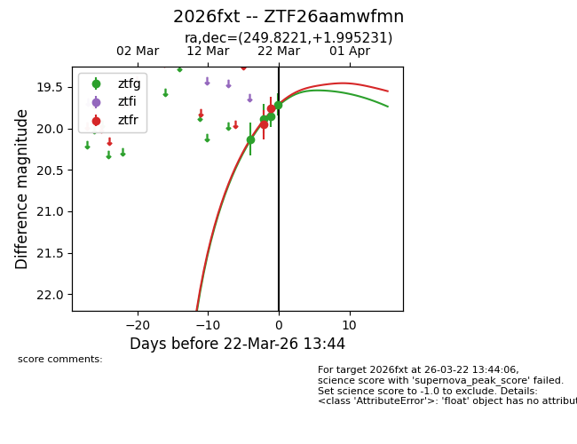
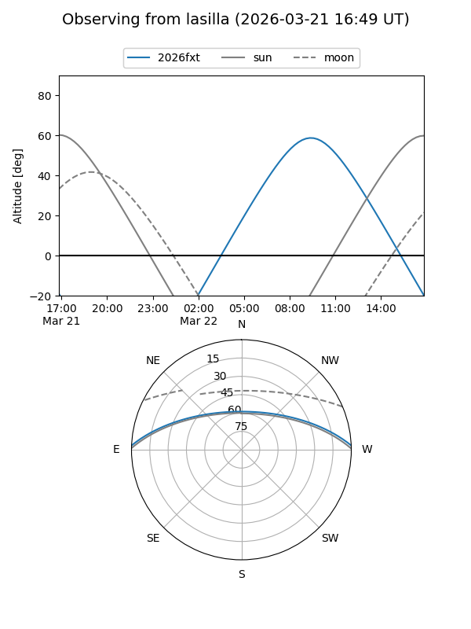
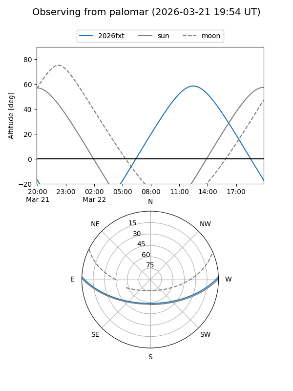
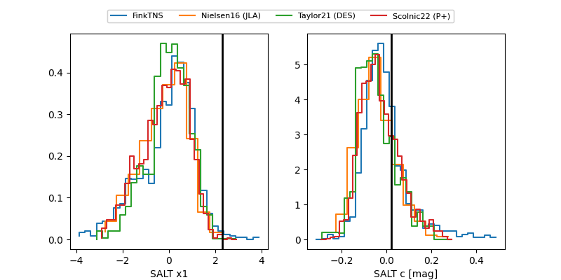

2026fxt
Target 2026fxt at 2026-03-22 13:46
Aliases and brokers:
FINK: link
Lasair: link
ALeRCE: link
TNS: link
YSE: link
alt names
ZTF26aamwfmn (ztf,fink_ztf)
2026fxt (tns,yse)
Coordinates:
equatorial (ra, dec) = 249.8221,+1.99523
equatorial (HMS+DMS) = 16:39:17.31,+01:59:42.83
galactic (l, b) = (18.3815,+30.05230)
Flags:
Photometry:
last ztfg=19.71, ztfr=19.76
4 ztfg, 2 ztfr detections
Lightcurve

Visibility


Additional plots
